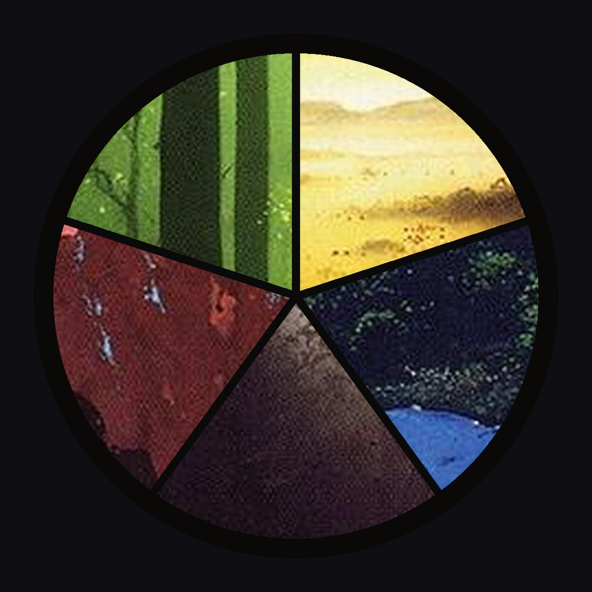
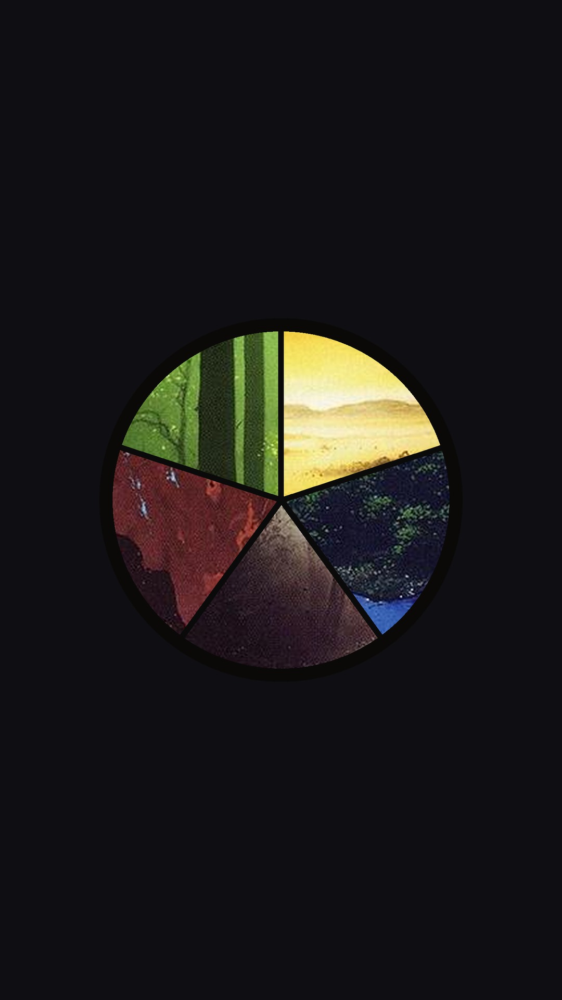
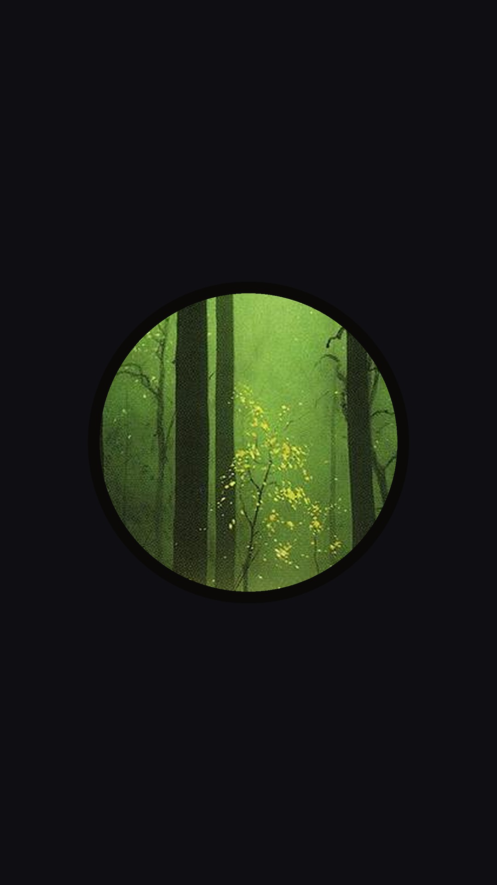
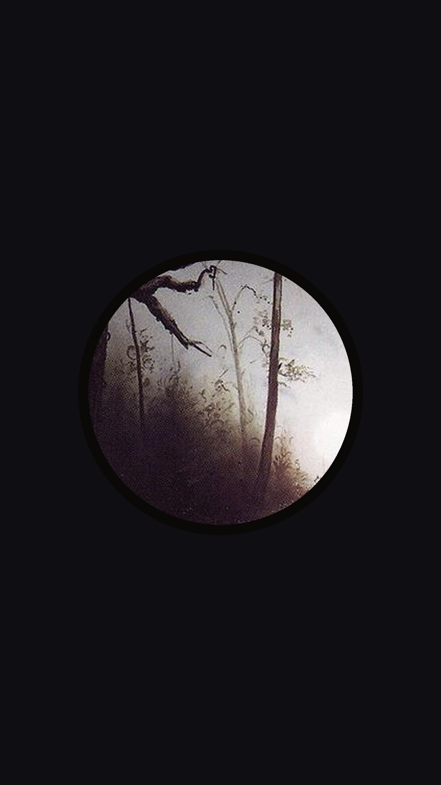
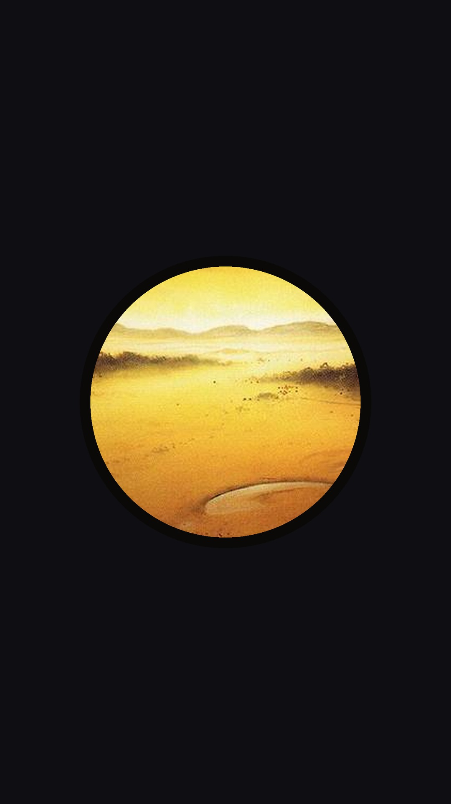
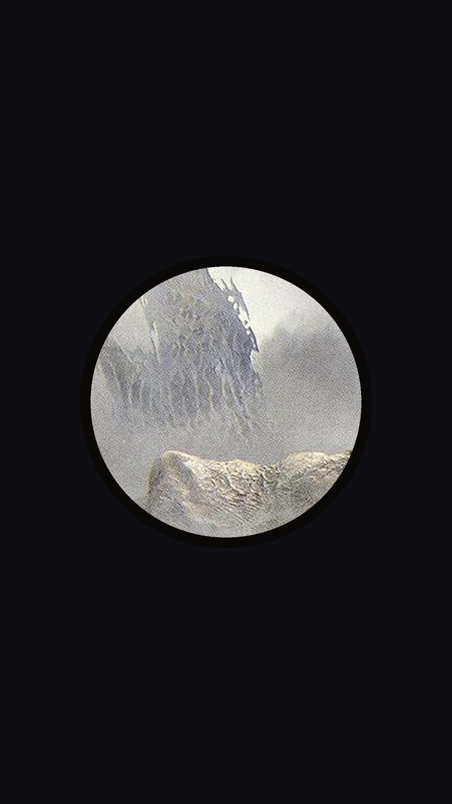

No iPhone ou iPad, toque e segure a imagem e escolha Salvar na Fotos (ou Adicionar às Fotos). No vídeo, toque em Baixar vídeo, abra o download pela setinha da barra do Safari e use Compartilhar e depois Salvar Vídeo. Os textos têm o botão Copiar.
Commander: carta de Magic nova que deixa você jogar com vida negativa. Georgiou, Terran Emperor chegou nas prévias de Star Trek. Georgiou é uma mítica lendária preta de 6 manas. Enquanto ela estiver no campo, você não perde por ficar com 0 ou menos de vida. No fim do seu turno, perde 3 de vida e compra uma carta, e se a vida estiver em 0 ou menos, cria dez fichas Oficial 1/1. Atenção na mesa: dano de comandante e veneno continuam valendo, e se ela sair do campo com sua vida negativa, você perde na hora. Também tem a palavra Strange new worlds, que conta terrenos com nomes diferentes, e o Topdeck do Dia é Platinum Angel. Edição completa em fontedemana.com.br Arte da capa: Georgiou, Terran Emperor, Julia Metzger. Topdeck: Platinum Angel, Brom. Valores em reais pela cotação de 21 out (Banco Central, PTAX). #mtg #commander #startrek Fonte de Mana is unofficial Fan Content permitted under the Fan Content Policy. Not approved/endorsed by Wizards. Portions of the materials used are property of Wizards of the Coast. ©Wizards of the Coast LLC.
Commander: Georgiou, Terran Emperor deixa você jogar com vida negativa e ainda cria dez fichas. Nova mítica preta das prévias de Star Trek. Você colocaria Georgiou de comandante ou nas 99 de um deck de Necropotence? Conta aqui nos comentários. Edição completa em fontedemana.com.br #mtg #commander #startrek Fonte de Mana is unofficial Fan Content permitted under the Fan Content Policy. Not approved/endorsed by Wizards. Portions of the materials used are property of Wizards of the Coast. ©Wizards of the Coast LLC.
Cada post do Threads aceita até 500 caracteres, e todos aqui cabem. Os posts com imagem e com vídeo já levam o aviso de conteúdo de fã no fim. No fio, publique o post 1 e vá adicionando os seguintes como continuação, na ordem. Os posts avulsos são para espalhar ao longo do dia. Use uma tag por post, a sugestão é MTG.
Star Trek revelou Georgiou, Terran Emperor: mítica preta de 6 manas que impede você de perder por vida zerada. No fim do seu turno, você perde 3 de vida e compra uma carta. Com vida em 0 ou menos, cria dez fichas 1/1. Dano de comandante e veneno ainda matam, e se ela sair com sua vida negativa, você perde. Comandante ou nas 99? fontedemana.com.br
Georgiou, Terran Emperor, revelada nas prévias de Star Trek: mítica lendária preta de 6 manas, 4/6. Enquanto ela estiver no campo, você não perde por ficar com 0 ou menos de vida.
No fim de cada turno seu, você perde 3 de vida e compra uma carta. Se a vida estiver em 0 ou menos, cria dez fichas Oficial 1/1 vermelhas. Dano de comandante e veneno continuam valendo.
Outra novidade: Strange new worlds, palavra que conta terrenos com nomes diferentes. Excalbian Gamemaster cria uma ficha 1/1 para cada nome. Básico repetido conta como um só.
Topdeck do Dia: Platinum Angel, de 2003. Você não perde o jogo e ninguém vence enquanto ele estiver no campo. A partir de US$ 9,59 (R$ 48,21) no Scryfall.
Edição completa em fontedemana.com.br Valores em reais pela cotação de 21 out (Banco Central, PTAX).
Fonte de Mana is unofficial Fan Content permitted under the Fan Content Policy. Not approved/endorsed by Wizards. Portions of the materials used are property of Wizards of the Coast. ©Wizards of the Coast LLC.
Georgiou, Terran Emperor deixa você jogar com vida negativa e cria dez fichas quando a vida zera. Você jogaria com ela de comandante ou nas 99?
Opções: comandante, nas 99, nenhum dos dois






Notícias diárias de Magic: The Gathering Commander checado toda manhã, às 6h Conteúdo de fã não oficial